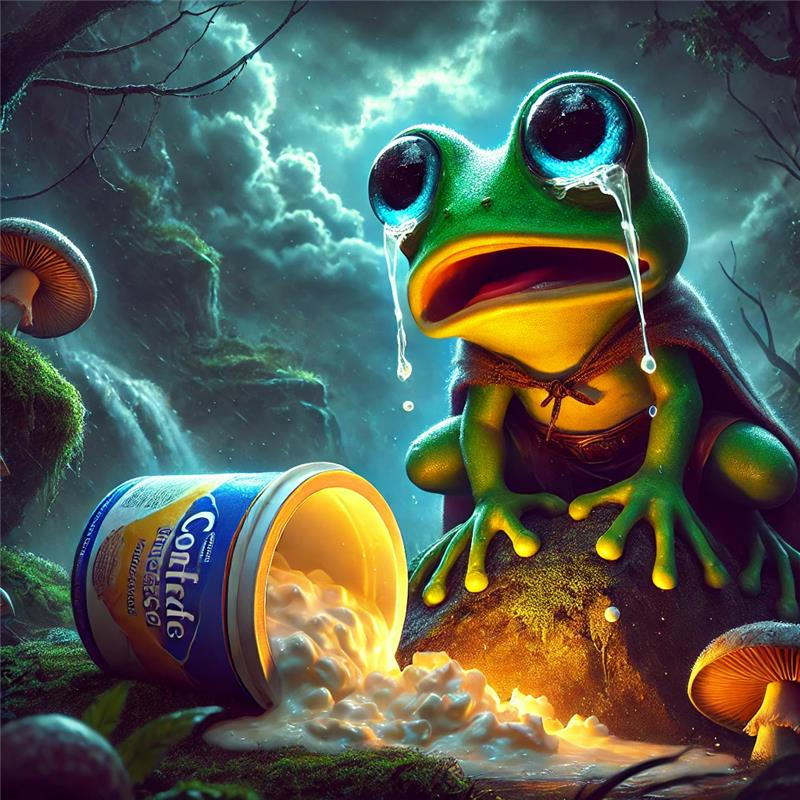
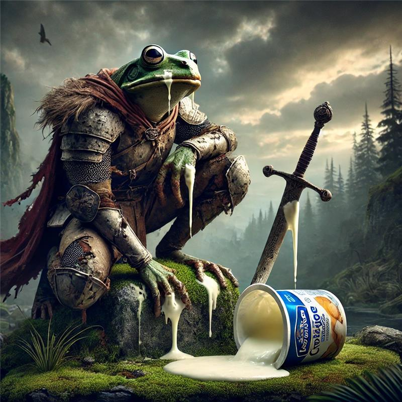
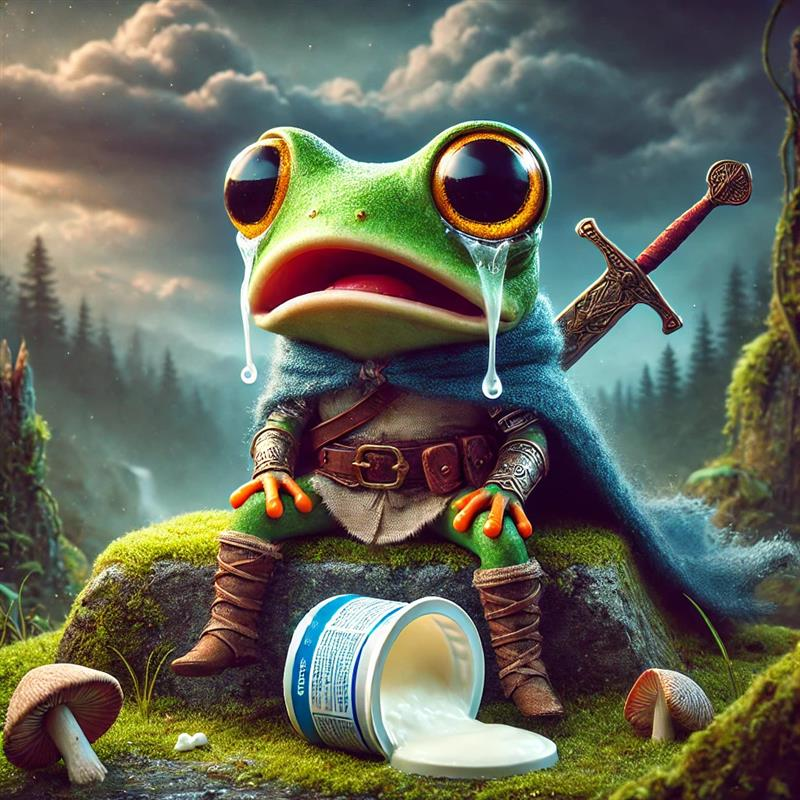
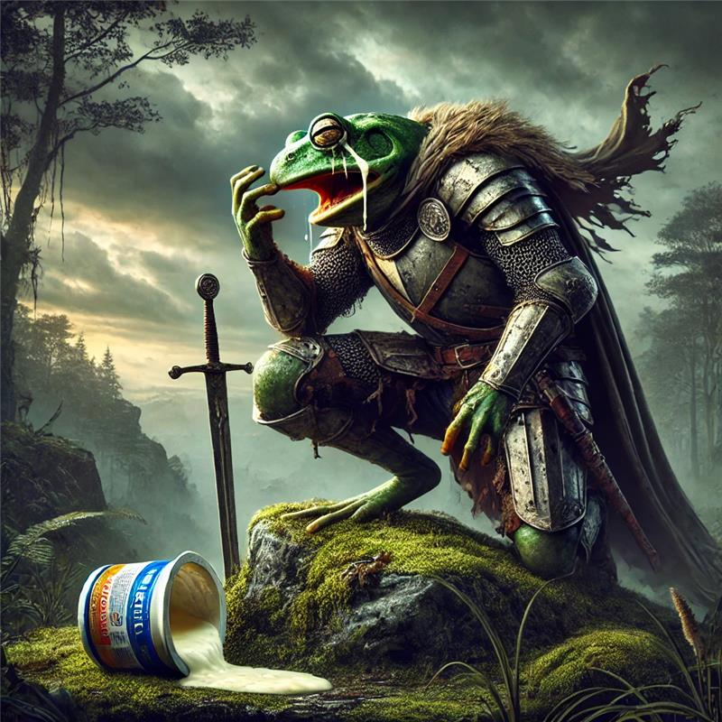

Von Froschela Merkel empfohlen!
Once upon a time, there was a frog—not just any frog, but a muscular, powerful amphibian warrior whose form resembled the statues of ancient gods. His name was Simon the Handsome.
Simon the Handsome loved only one thing more than battle: his quark. It was the elixir of his immense strength, the secret of his mighty muscles. But one day, the unthinkable happened. A member of the accursed people of Louise committed the unforgivable act: he knocked the quark from Simon the Handsome's hand, and the precious food spilled onto the ground. The world stood still. The sky darkened. An unstoppable rage ignited in Simon the Handsome’s veins. With every pulse, his biceps swelled, his tendons tightened, his veins surged like raging rivers.
With a mighty battle cry, he ascended the citadels of the Louise. His leap spanned miles, his fist shattered walls like rotten wood. The Louise, feeble creatures, could not withstand his fury. A single strike from Simon the Handsome’s titanic arm sent dozens crumbling into the dust. Their screams vanished into the night, unheard.
Fire and destruction followed him. No stone was left upon another, no life spared. Simon the Handsome’s muscles trembled in the glow of his triumph. As the last echoes of the Louise faded, he stood alone atop the ruins of the annihilated people. He breathed heavily. His gaze fell upon a puddle of spilled quark. A tear rolled down his hardened cheek. He had taken his revenge. But at what cost?
Simon the Handsome, the once-great warrior of the quark, wandered on. Stronger than ever before. A god among frogs. A symbol of epic power.